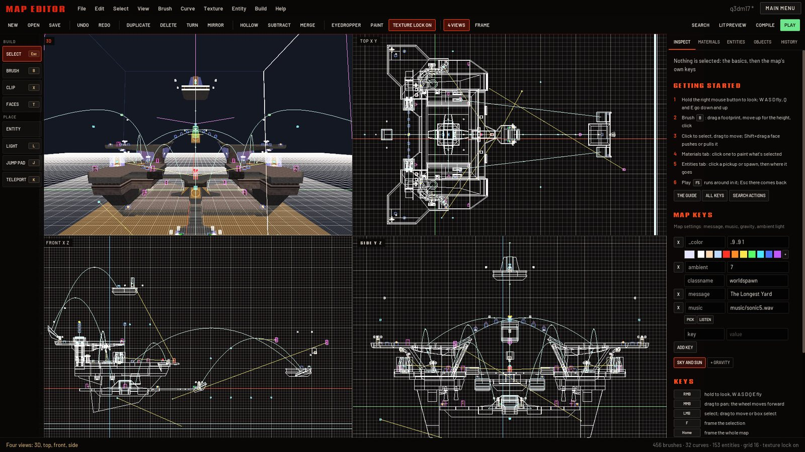
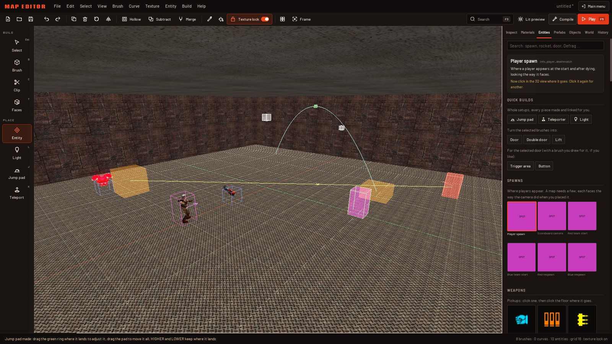
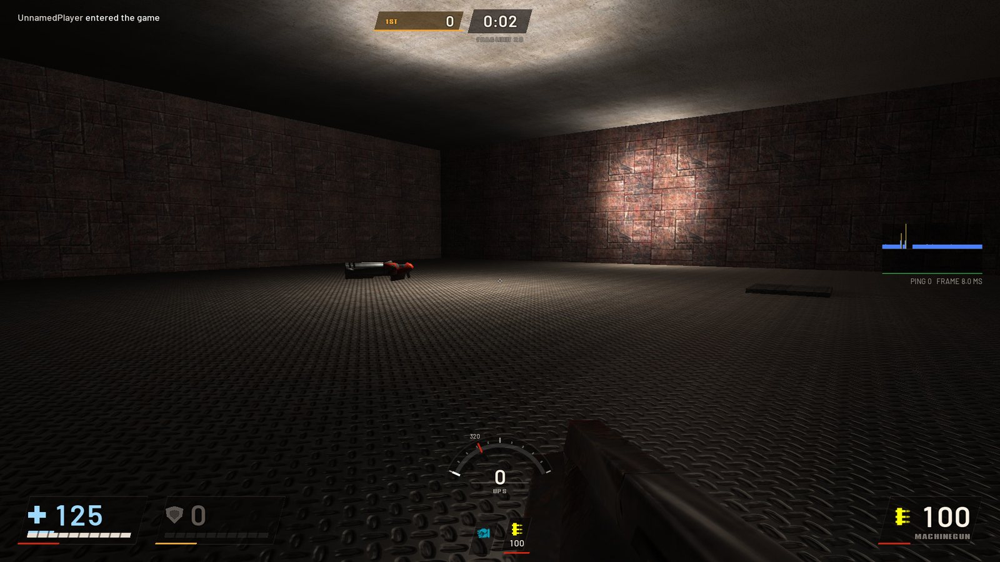

I Open the editor
From the main menu, one click
Pick Map Editor in the main menu. The first time, it opens on a new map: a small lit room with a light and a spawn point, ready to play as it is. The editor draws with the Oz renderer, the one Oz picks by default; if you've switched to another one, the status line tells you to switch back under Settings, Video, Renderer.
A card comes up the first time too: Getting started, six steps to a map you can play (look around, build, shape, paint, fill it, play). Got it closes it, and F1 or Help, Getting started brings it back whenever you want it.
- The menu bar. File, Edit, Select, View, Brush, Curve, Texture, Entity, Build and Help hold every action, each row with its keys. A mark shows what's on; a row is grayed out when there's nothing for it to work on. Main Menu is at the right end.
- The action bar. The actions you reach for most, with Play in green at the right. In a narrow window, New, Open, 4 Views, Frame and Search give up their place (they're still in the menus).
- The tool strip. Eight tools, each with its key, the one in use lit.
- The view. One 3D view, or four views with V.
- The panel. Seven tabs: Inspect, Materials, Entities, Prefabs, Objects, World and History.
- The status line. What the pointer is over and what a tool wants next on the left; the map's counts, the grid and the texture lock on the right. Notes like "Undo Jump higher" show here for a while too.
Scroll the diagram sideways
Rest the pointer on any button for a moment and a tip says its name, its keys and what it does. The same words show in the status line. If you can't find something, press F3 and type what you want to do: "hollow", "light", "save". Enter does it.
With nothing selected, the Inspect tab shows the getting started steps, the map's own settings and a short list of keys, so the panel is never empty.
Leaving and coming back
Main Menu at the right of the menu bar (or File, Exit to main menu) takes you back to the main menu. Nothing is lost: the map stays in the editor exactly as it was until you open it again, saved or not.
Esc never leaves the editor. It cancels whatever a tool is in the middle of, and then clears the selection. To work the menus from the keyboard, press F10: the arrows move through them and Enter picks a row.
The editor also opens from the console: type editor.
II Moving around
Fly through it like a spectator
The 3D view flies the way you'd move in the game, with the mouse held down to look:
| Right mouse held | Look around by moving the mouse. Let go and the pointer is back where it was. |
|---|---|
| W A S D | Fly forward, left, back and right while the right button is held. |
| Q E | Fly down and up. |
| Shift / Ctrl | Fly faster or slower. |
| Wheel while looking | Sets how fast you fly; the status line shows the speed. |
| Wheel | Moves toward whatever the pointer is over (with Shift, four times as far). |
| Middle mouse drag | Slides the camera sideways and up and down. |
| F | Frames the selection: the camera turns and moves to look at it. |
| Home | Frames the whole map, centered on where players stand. |
Lost in a big map? Select what you want to work on in the Objects tab and press F, or double-click it there. Home always brings you back to the middle of things.
III Views and the grid
One view or four, and everything on the grid
Press V (or 4 Views in the action bar) to split the view into four panes, as classic map editors do: the 3D view, top (X across, Y up), front (X across, Z up) and side (Y across, Z up). Press V again and the pane under the pointer fills the view alone. Ctrl+Tab steps that single view through 3D, top, front and side.

The 2D views are flat line drawings: brushes of the world in gray, brushes of an entity (a door, a trigger) in blue, the selection in orange, with entities, links and handles drawn as in 3D. Each one keeps its own place and zoom; Frame (F) and Frame the map (Home) set all four at once. In a 2D view, drag with the right or middle button to slide it, and turn the wheel to zoom toward the pointer.
Every tool works in whichever pane the pointer is over. In a 2D view a move stays flat in that view's plane, so it's the easy way to slide something along one axis. The Brush tool makes a brush in a single drag there (as deep as the selection, or as the last brush you made), and the Clip tool's cut runs straight back through the view.
The grid
Everything you draw, move or reshape lands on the grid. The number keys set its size in units:
[ halves the grid and ] doubles it, to any power of two from ⅛ of a unit up to 4096. Ctrl+wheel does the same. The status line always shows the size ("grid 16"). The grid's lines thin out as you zoom so they never crowd closer than a few pixels, every eighth line is brighter, and the axes are drawn in red (X), green (Y) and blue (Z).
Block out on a coarse grid (16 or 32) and only go finer for detail. A player is 30 units wide and 56 tall, and walks up steps of up to 18 units without jumping, so a 64-unit grid square is a comfortable corridor.
IV The tools
Eight tools down the left
The strip on the left holds the tools, in two groups: Build for making and shaping brushes, Place for putting things in the map. Press a tool's key or click it; the one in use is lit. Esc goes back to Select.
| Tool | Key | What it does |
|---|---|---|
| Select | Esc | Click to select, drag to move, drag on empty space to select with a box. The handles of selected brushes reshape them. More |
| Brush | B | Drag a footprint on a surface or on the grid, move the mouse to set the height, then click. Enter makes it too. More |
| Clip | C | Click two points on a brush to cut it through them; a third point tilts the cut. Tab picks which side stays, Enter cuts. More |
| Faces | T | Click faces to pick them for painting and texture work; drag to push them. More |
| Entity | Opens the Entities tab: pick a pickup, spawn, trigger or anything else, then click where it goes. More | |
| Light | L | Click a surface: a light goes one grid step off it. |
| Jump pad | J | Click where players step, then where they should land: a working jump pad, aimed. More |
| Teleport | K | Click the entrance, then the exit: a teleporter and its destination, linked. |
While a tool waits for its next click, the status line says what it wants ("click where the player lands", "Enter cuts, keeping the far side"). While you draw or drag, the size or the distance shows next to the pointer.
V Selecting and moving
Click, drag, and the handles
Selecting
- Click selects what's under the pointer. A brush that belongs to a group or to an entity (a door, a lift) selects the whole thing; a double-click, or Ctrl+click, reaches the single brush inside.
- Shift+click adds to the selection, Ctrl+click toggles one thing in or out.
- Click again on the same spot to take the next thing behind it: handy where brushes overlap.
- Drag on empty space to draw a box: everything at least half inside it is selected. In a closed room every drag starts on a wall, so hold Ctrl and drag from anywhere off the selection.
- Ctrl+A selects everything, Ctrl+Shift+A nothing. Esc clears the selection when no tool has anything to cancel.
Moving
- Drag a selected object to move it across the grid, its corner landing on a grid line. Hold Alt to move it up and down instead, or Ctrl while dragging to move it off the grid. Esc during the drag puts it back.
- Ctrl+drag the selection to drag off a copy and leave the original in place.
- The arrow keys nudge the selection a grid step as the camera sees it: Up moves it away from you, Down toward you. PgUp and PgDn move it up and down.
- Duplicate (Ctrl+D or Space) puts a copy beside the selection, to its right as the camera sees it. Copy, Cut and Paste are Ctrl+C, Ctrl+X and Ctrl+V; Paste puts it where the pointer is, on the grid. Del or Backspace deletes.
- By numbers: the Transform rows of the Inspect tab move the selection by X, Y and Z, turn it by any number of degrees (Spin flat turns it on the floor, Tip X and Tip Y tip it over the red and green grid lines), and resize it to a width, depth and height, standing on its floor.
The handles
Selected brushes grow handles for reshaping them without any other tool:
Scroll the diagram sideways
Dragging corners always keeps a brush a solid, convex shape: the brush becomes the tightest shape around its corners. Picked corners can be deleted with Del, which reshapes the brush without them (with corners picked, Delete takes only the corners, never the brush; Shift+Del does only that).
Undo
Ctrl+Z undoes, Ctrl+Y or Ctrl+Shift+Z redoes, and both put back the selection you had. The History tab lists every change: click one to go back to it, or forward again.
VI Building with brushes
Boxes first, then shape them
A map's walls, floors and ceilings are brushes: solid, convex blocks. You build with boxes and then cut, carve, merge and reshape them.
The Brush tool
Press B, drag a footprint on the floor (or any surface, or the grid where there's nothing), then move the mouse up for the height and click. The new brush is made of the current material (the one shown at the top of the Materials tab). In a 2D view the footprint is all it needs: the brush is made at once.
The Clip tool
Press C and click two points on a brush: the cut runs straight into the face you clicked first, through both points. A third point tilts it. The part that will go is tinted red; Tab switches between keeping the far side, the near side or both halves, and Enter cuts. In a 2D view the points go anywhere and the cut runs straight back through the view. Clipping a box corner to corner is how you make a wedge, a ramp or a slanted wall.
Scroll the diagram sideways
Hollow, Subtract, Merge, Stairs
- Hollow (Ctrl+Shift+H) turns each selected brush into a room: walls one grid step thick (8 units at least) around its inside. Draw a box the size of the room you want, hollow it, and you have floor, walls and ceiling.
- Subtract (Ctrl+Shift+X) carves the selected brushes out of every brush they overlap, then deletes them. Push a block through a wall and subtract it to make a doorway or a window.
- Merge (Ctrl+J) makes the selected brushes one: the smallest shape without dents that holds them all.
- Stairs (Ctrl+Shift+T) turns each selected wedge into solid stairs climbing its slope, each step about 8 units high. Clip a box corner to corner first to get the wedge.
Turn and mirror
R turns the selection 90 degrees counter-clockwise as seen from above, Shift+R clockwise; add Ctrl for 15 degrees. It turns about its middle, snapped to the grid. M mirrors it front to back (along X), Shift+M left to right (along Y) and Ctrl+M upside down. The Inspect tab's Turn row takes any angle.
Texture lock
Texture lock (Ctrl+T, on at first) decides what happens to textures when brushes move, turn or mirror. On, the texture travels with the brush, so a moved crate still looks like a crate. Off, the texture stays put in the world and the brush slides under it, which is what you want when nudging a wall to line its bricks up with the next one. The action bar's button shows which it is.
Detail and collision
- Detail (Ctrl+Shift+D) marks brushes as decoration: trim, pillars, props. Detail brushes don't cut the map up for working out what's visible from where, so the map compiles faster and runs smoother. Walls that close the map in should stay structural (press it again to put a brush back).
- Collision (a checkbox at the top of the Inspect tab's Shape rows, and the Brush menu) turns a brush solid or not. With it off, players and shots pass through: it still draws and still blocks light. Every brush collides at first, liquids aside.
VII Materials and textures
Paint it from your own install
Every surface has a material: a texture and how it draws. The editor lists every material in your game's files, the stock ones and every map pack you've installed.
The Materials tab
At the top is the current material, which new brushes and Paint use. Click any material below to paint the selection with it and make it current. The chips along the top switch what the list shows:
- In this map: every material the map already uses.
- Favorites: materials you keep at hand. Add to favorites puts the current material there; pressed again it takes it out.
- Recent: the ones you used last.
- Dev textures: Oz's plain prototyping textures, for blocking out.
- All, Folders and Map packs: everything, the game's own first, then each folder, and your map packs under their own chip.
The search box narrows any of them as you type ("concrete", "gothic", "sky"). Tool materials, like the invisible clip and trigger ones, show in their own colors in the view, as other editors draw them.
Eyedropper and Paint
- Eyedropper (I): the material of the face under the pointer becomes the current one.
- Paint (P): puts the current material on the picked faces, or on every face of the selected brushes and curves. Painting keeps each face's texture scale and position.
- In the Faces tool, Alt+click is the eyedropper and Alt+Shift+click paints the face under the pointer. Copied onto a face in the same plane, a texture carries straight on across the join.
The Faces tool
Press T to work on single faces instead of whole brushes. Click a face to pick it, Shift+click to add one, Ctrl+click to toggle, double-click to pick every face of that brush. Entering the tool picks the faces of the brushes you had selected; leaving it selects the brushes of the picked faces. With faces picked:
- The arrows move the texture a grid step the way you press, as the camera sees each face (Shift: one texel).
- Ctrl+Left and Ctrl+Right turn it 15 degrees; Ctrl+Up and Ctrl+Down double and halve its size.
- Dragging pushes the picked faces in or out, like the face diamonds.
Texture rows in the Inspect tab
For the picked faces (or the selected brushes), Inspect shows the material, a Color row that tints the texture (in the view and in the game), and the Texture numbers: shift, scale and turn, typed in directly, blank where the faces differ. Under them:
- Left 15, Right 15, ×2 and /2.
- Fit: the texture so many times across and down each face.
- Left, Right, Top, Bottom, Center: line an edge (or the middle) of each face up with the texture.
- Flip across, Flip down and Reset (the default mapping at half scale).
- UV editor (U): the face's outline over its texture's tiles. Drag the texture to slide it, turn the wheel to zoom, use the same buttons under it, and Frame puts the face back in the middle. U or Esc closes it.
VIII Entities
Items, spawns, pads and everything that does something
Entities are everything in a map that isn't plain wall: weapons and armor, spawn points, lights, jump pads, teleporters, doors, triggers. The Entities tab lists them all in plain words.

The Entities tab
- A card at the top says what you're about to place, what it does and what to click next. Point at any tile to read what it does.
- Quick builds come first: whole setups with every piece made and linked for you (below).
- Then the sections, in the order you'll want them: Spawns, Weapons, Ammo, Armor, Health, Powerups, Lights and sound, Teleporter pieces, Jump pad pieces, Moving brushes, Triggers and logic, Hazards, Models and mirrors, Invisible markers, CTF flags and Defrag.
- Pickups show as their icons. Other tiles are marked SPOT (something at one point) or AREA (a box of brushes, like a door or a trigger). CPMA's own items are marked.
- The search box finds anything by name or by what it is: "spawn", "rocket", "door", "Defrag".
- A mod's entity list in your install (a
.deffile, such as Defrag's) joins the tab under the mod's name.
Placing
Click a tile, then click in the view. The entity sits against the surface you clicked (floor, wall or ceiling), on the grid. A spawn point faces the way the camera faces. Keep clicking to place more; clicking an entity that's already there selects it instead.
An AREA entity (a trigger, a door, a moving platform) is made of brushes: click in the view for a 64-unit box of it, or select brushes first and then pick it to turn those brushes into it. Back to the world in the Inspect tab puts them back as plain brushes.
In the view, spawn points stand as fighters, pickups turn and bob as they do in the game, lights glow in their own color (a selected one shows how far it reaches), and lines show what triggers what, with an arrowhead the way it goes.
Jump pad, in two clicks
Press J, click the floor where players should step on, then click where they should land. As you move the pointer before the second click, the arc shows where they'll fly.
Scroll the diagram sideways
After the second click the Select tool is back with the new pad selected. Drag its landing ring to move where it lands; the throw re-aims as you drag, all in one undo step. Land here in the Inspect tab (or the Entity menu) lets you click a new landing spot, and Higher and Lower raise or drop the arc by 32 units while it still lands in the same place.
The other quick builds
- Teleporter (K): click the entrance, then the exit. You get the teleport trigger and its destination, linked.
- Light (L): click a surface and a light goes one grid step off it. Its color, brightness and reach are in the Inspect tab (below).
- Door: select brushes, press Door. They become a sliding door that opens when a player comes near or when it's shot. Inspect sets which way it slides and what opens it.
- Double door: the selected brush is cut in two, a pair of doors sliding apart and opening together.
- Lift: build it where its top should be. It starts lowered and rises when someone steps on it; Inspect sets how far it travels.
The Entity menu has more for moving brushes: Add a button (click a wall: a button there opens the selected doors), Lay a path (click where a train goes, corner by corner; the first corner again closes the loop) and Play movers, which runs the selected doors, lifts and other movers in the view as they'll move in the game.
IX The inspector
Every setting, with a picker for each
The Inspect tab shows whatever is selected: at the top, what it is ("Selected: 1 entity"), then the rows that apply to it. For brushes those are the material, color, texture, transform and shape rows covered above. For entities it's their title in plain words, what they do, and their keys: the settings the game reads.
- Every key is a name and a value you can edit, rename or remove (the × beside it). Add key adds any key by name.
- Under them, a chip for each key the entity takes but doesn't have yet (+TARGET, +WAIT, +TEAM ...). Click one to add it at the game's default. Point at a key for what it does.
- Spawnflags show as switches with their meaning, such as Suspended for an item that floats in the air.
- Rows of switches set which game types it appears in: only in some, or not in free for all, team games or single player.
- With nothing selected, the same rows edit the map's own keys: its name (message), music, gravity, ambient light.
Pickers for typed keys
Keys the editor knows the type of get a control beside the text field:
- Color: a swatch and a palette (white, warm and cool white, red, orange, yellow, green, cyan, blue, purple). The + opens a grid of twelve hues in three strengths.
- Angle: a compass in 45-degree steps, plus Up and Down, and View to use the way the camera faces.
- On/off: a switch.
- Sound and music: Pick opens a list of the game's sounds to choose from, Listen plays it.
- Model and target: Pick lists the game's models, or the names in your map to link to.
In a pick list, type part of a name to narrow it, move with Up and Down, and press Enter or click to take it.
Jump pads, lights and doors
- A selected jump pad reads out its throw: launch speed, how high over the pad, how far across, and its time in the air, with Land here, Higher and Lower. If something's wrong with it, the readout says what in red.
- A selected light has its color and two sliders: Intensity (300 by default) and Range. All the way left, Range is Auto and the light fades as real light does; anywhere else, the light fades evenly to nothing at that distance. Make spotlight aims it: an aim point goes on the floor below, which you drag to point it, and a Cone slider sets how wide it shines. Back to a point light undoes it.
- A selected door has switches for what opens it (a player comes near, it's shot), arrows for the way it slides, and how many buttons or triggers open it.
X Curves
Arches, pillars and bends
Curves are smooth surfaces, for round pillars, arches and bent pipes. Make them from boxes: select one or more brushes and pick a shape in the Curve menu (or the Inspect tab's Shape rows). Each brush becomes a curve filling its box, in the current material:
- Cylinder and Cone: round the up axis, facing out (in a 2D view, round that view's axis).
- Arch: half round across the box's longer side, facing in, as you'd see it from a doorway.
- Bevel: a quarter round, facing in, for a rounded corner.
- Flat: a flat sheet on the box's top, to bend by its control points.
A selected curve's control points are its handles: drag them like corners (Alt for up and down, Ctrl off the grid) or nudge them with the arrows, and the curve follows. Its control net is drawn over it.
The Inspect tab's Curve rows shape it further:
- + Columns, + Rows split every section in two, so the curve keeps its shape exactly but has more points to bend. - Columns, - Rows join them again.
- Invert turns it inside out, so its other side shows.
- Caps closes the open ends: discs on a cylinder, half discs on an arch.
- Thicken gives it a back, one grid step behind, with seams along its open edges.
Texture moves, turns, scaling, Fit, Flip and Reset work on curves too, along the curve's length. Aligning and typed texture numbers are for brush faces only.
XI Hide, lock, groups, prefabs
Keep a big map workable
Hide and lock
- Hide (H) hides the selection from every view, Hide the rest (Alt+H) hides everything else, and Show all (Shift+H) brings it all back.
- Lock (Ctrl+L) keeps the selection drawn but out of reach: clicks, boxes and Select all pass it by. Unlock all is Ctrl+Shift+L.
- The Show chips (in the Objects tab and the View menu) leave whole kinds out of the view: tool brushes, triggers, sky, entities, curves.
All of this is only how the editor shows the map. Hidden, locked and filtered things still compile and save. The status line counts what's hidden and locked, so nothing goes missing for long.
Groups
Group (Ctrl+G) ties the selected brushes and curves together: a click selects the whole group and a double-click one brush in it. Ungroup (Ctrl+Shift+G) takes it apart. Groups are only for editing; in the game they're plain world.
Prefabs
A prefab is a piece you've built and want again, in this map or any other: a staircase, a doorway, a lamp with its light. Select it, type a name in the Prefabs tab and press Save selection. The tab shows every prefab you've saved as a 3D thumbnail; click one to put it where the pointer is, as Paste does. Delete takes two clicks, so it can't happen by accident.
The Objects tab
Everything in the map, listed: the world and every entity in the file's order, with their brushes under them. Type in the filter to find a class, a name or a material. Click a row to select it (Shift adds, Ctrl toggles), double-click to frame it. Hidden and locked rows are marked, and the tab has the hide, lock and group buttons too.
XII Sky and sun
The sky around the map, and its light
The World tab (also Build, Sky and sun) sets the map's sky and the light it gives. It's saved with the map, and you see it in the Lit preview (F6) and when you play.
- Sky: a tile for each of the game's skies, the current one marked. A new map starts with gray clouds and a white sun.
- Light from: These settings lights the map with the sun and sky glow below; The sky's own uses the light the sky came with, as the stock maps are lit.
- Fill light: a soft light everywhere, darker in corners. Auto turns it on only when the map has no lamps, so a first blockout is never pitch dark.
- Sun color and Sky glow color: palettes, or red, green and blue typed from 0 to 1.
- Sun brightness (100 is about as bright as the stock outdoor maps), Sun height (degrees over the horizon: 90 is straight down, low makes long shadows), Sun direction (degrees: 0 from the east, the +X side, 90 from +Y), Sky light (how much the sky itself glows onto the map) and Ambient light (a little light everywhere; 5 to 20 is subtle).
- Defaults puts all of it back.
You don't need to seal your map against the void. Every compile closes it in a box of sky by itself, out past the map's edges and above it, with a deadly floor under it so anyone who falls off an edge dies at once. The box is only in the compiled copy, never in your file.
XIII Compile and play
Press F5 and you're in it
Maps are compiled before the game can run them: turned into a level file, with their light worked out. The editor does it for you, in the background, from the map as it is right now. You don't need to save first.
Scroll the diagram sideways
- Play (F5): a quick compile, then you're in the map at a spawn point. A blockout is ready in moments.
- Play from here (Shift+F5): the same, starting with your eye where the editor's camera is. The fastest way to test one jump.
- Compile (Ctrl+F5): the whole compile, with visibility and the full, softer light. Use it for the finished look and before you share the map.
- Lit preview (F6): the editor's view shows the map lit by its own lights, from the last compile. Changes you make meanwhile are drawn over it; F6 again goes back to the plain view.

Back to the editor
In the game, press Esc: the pause menu has Back to the map editor while you're in a play-test. The editor comes back with the map, the selection and the camera exactly as you left them.
When something's wrong
- After a compile with warnings, the status line counts them and a Warnings button shows in the action bar. Pick a warning and the editor selects and frames what it's about: a brush painted with a material the game doesn't have, say.
- Check the map (Build menu) looks for what would go wrong in the game: brushes without collision, jump pads that do nothing, targets that name nothing. What it finds goes in the same list.
- If a compile ever finds a leak (a hole from the inside of the map out to the void), it stops and draws a red line from an entity out through the gap; Show the leak turns the camera onto it.
Play-tests are saved as maps/ed_name.bsp in your user folder. The ed_ keeps a play-test of a stock map from replacing the original. When you open a stock map and compile it again, its lamps and teleporter pads (models that were built into the original and never shipped on their own) are left out, and the editor tells you how many.
XIV Opening and saving
Plain .map files, yours to keep
- New map (Ctrl+N): a lit room with a spawn point. With unsaved changes it asks first: Save, Discard or Cancel.
- Open map (Ctrl+O): a list of your maps; type to narrow it.
- Open a game map (File menu): any map in the game's files, the stock arenas and your map packs, made editable again with its brushes, curves and entities. Chips sort the list: All, id's arenas, Deathmatch, Tourney, Team, CTF and Other. It's the best way to learn: open a map you know and see how it's built.
- Save (Ctrl+S): the map as a
.mapfile. A map that's never been saved asks for a name. Save as (Ctrl+Shift+S) saves it under a new one: letters, digits,-and_.
Where your files go
| What | Windows | Linux |
|---|---|---|
| Your maps | %APPDATA%\Oz Arena\oz\editor\maps | ~/.ozarena/oz/editor/maps |
| Prefabs | %APPDATA%\Oz Arena\oz\editor\prefabs | ~/.ozarena/oz/editor/prefabs |
| Play-tests | %APPDATA%\Oz Arena\oz\maps | ~/.ozarena/oz/maps |
| Your keys | %APPDATA%\Oz Arena\oz\editor\keymap.cfg | ~/.ozarena/oz/editor/keymap.cfg |
The files are standard .map files, the same as other map editors use: a map you make here opens in NetRadiant-custom or TrenchBroom, and theirs open here. A map opened and saved without changes comes out the same, number for number, in whichever of the three face formats it was written in; new maps use the Valve 220 format. What a .map can't hold (the camera, what's hidden or locked) goes in a small file beside it.
Autosave
A copy of the map is written aside within 20 seconds of a change, and dropped when you save. If the game closes or crashes with changes unsaved, the next time the editor opens a bar across the view offers it back: Recover opens it, Throw away deletes it.
XV Defrag courses
Timed runs, start to finish
If you have Defrag installed, the editor builds race courses for it: the Entities tab's Defrag section and the Entity menu's Defrag rows.
Scroll the diagram sideways
- Start line, Checkpoint line, Finish line: click one side of the course, then the other. A trigger goes across between the two clicks, from the floor up to the ceiling (256 units at most), and fires Defrag's timer.
- Speed pad: one click on the floor. It launches the player at 700 along the axis nearest the way the view faces.
- Shooter: two clicks, where it fires from and then the zone that sets it off. It fires a rocket at the player, leading them, once a second while they're in the zone.
- Check the course: looks for a start, a finish and a spawn point, a trigger for every timer, and a name behind every target. It also follows the open space from the spawn points, through teleporters, to see whether every line can be reached at all (it doesn't test jumps: a ledge too high still counts as a way). What's wrong goes in the Warnings list, each item framed when picked.
- Play in Defrag (Build menu): a quick compile, then the game switches to Defrag and you run the course with its own timer. Disconnect brings you back, with the map waiting in the editor.
Saving a course also writes the small map info file Defrag lists maps by, beside the .map.
Oz never downloads Defrag for you: install it into your Quake III Arena folder as usual and the editor finds it. If it can't, Play in Defrag says so.
XVI Your own keys
Change any key, or bring Radiant's
Search
Search (F3, or Search in the action bar) finds any action by its name, by what it does or by its keys. The best matches come first; Up and Down move the highlight, Enter does it, Esc closes the box.
The Keys dialog
Open it from Edit, Keys or Help, Keys (or All keys on the getting started card). It lists every action with its keys and a Set button:
- Press Set, then the keys you want, with Ctrl, Shift or Alt if you like. Esc keeps the old keys; Backspace leaves the action with none.
- A key does one thing: give it to one action and the action that had it loses it.
- 1 to 9 always stay the grid's.
- Type in the filter to find an action or a key ("clip", "texture", "Ctrl+").
- Oz keys puts every action back to the editor's own keys.
- Radiant keys gives the keys of GtkRadiant and NetRadiant where the editor has the same action: Space and Ctrl+D copy, X the clipper, Ctrl+Enter its side, Shift+U subtract, Ctrl+U merge, Shift+T texture lock, Shift+arrows move the texture, Shift+PgUp and Shift+PgDn turn it. Everything else keeps the editor's own keys.
Your keys are kept in keymap.cfg in your editor folder, and the tips, the status line and the menus all show your keys, not the defaults.
Every action also runs from the console as ed followed by its name (ed hollow, ed play); ed alone lists them all.
XVII Every key
The key reference
The editor's own keys, as it ships. If you've changed yours, the menus and tips show yours.
Nothing matches. Try part of an action's name, or a key such as Ctrl.
| Camera | |
|---|---|
| Right mouse held | Look around |
| W A S D Q E | Fly while looking: forward, left, back, right, down, up |
| Shift / Ctrl | Fly faster / slower |
| Wheel | Move toward the pointer (2D views: zoom; while looking: fly speed) |
| Middle mouse drag | Slide the view (2D views: the right button too) |
| F | Frame the selection |
| Home | Frame the map |
| Views and grid | |
| V | Four views, or the pane under the pointer alone |
| Ctrl+Tab | Next view: 3D, top, front, side |
| 1 – 9 | Grid 1, 2, 4, 8, 16, 32, 64, 128, 256 |
| [ ] | Smaller grid / bigger grid |
| Ctrl+wheel | Grid smaller or bigger |
| F6 | Lit preview on and off |
| Tools | |
| Esc | Select tool; cancel what a tool is doing, then clear the selection |
| B | Brush |
| C | Clip |
| T | Faces |
| L | Light |
| J | Jump pad |
| K | Teleporter |
| Enter | Make the brush (Brush) or cut (Clip) |
| Tab | Clip: the side kept (far, near, both) |
| Selecting and moving | |
| Click | Select (Shift adds, Ctrl toggles; double-click reaches inside a group) |
| Drag | Move on the grid (Alt: up and down; Ctrl held: off the grid) |
| Ctrl+drag | From the selection: drag off a copy; from elsewhere: box select |
| Shift+drag a face | Push or pull the face |
| Ctrl+A / Ctrl+Shift+A | Select all / select none |
| Arrows | Nudge a grid step as the camera sees it (Faces tool: move the texture) |
| PgUp PgDn | Nudge up / down |
| Ctrl+D or Space | Duplicate |
| Ctrl+C Ctrl+X Ctrl+V | Copy, cut, paste at the pointer |
| Del or Backspace | Delete (with corners picked: only those corners) |
| Shift+Del | Delete the picked corners |
| Ctrl+Z | Undo |
| Ctrl+Y or Ctrl+Shift+Z | Redo |
| Brushes | |
| R / Shift+R | Turn 90 degrees left / right, seen from above |
| Ctrl+R / Ctrl+Shift+R | Turn 15 degrees left / right |
| M | Mirror front to back (X) |
| Shift+M | Mirror left to right (Y) |
| Ctrl+M | Mirror upside down (Z) |
| Ctrl+Shift+H | Hollow |
| Ctrl+Shift+X | Subtract |
| Ctrl+J | Merge |
| Ctrl+Shift+T | Stairs from a wedge |
| Ctrl+Shift+D | Detail, or structural again |
| Ctrl+T | Texture lock on and off |
| Materials and textures | |
| I | Eyedropper: take the material under the pointer |
| P | Paint the current material |
| U | UV editor |
| Ctrl+Left / Ctrl+Right | Turn the texture 15 degrees |
| Ctrl+Up / Ctrl+Down | Texture bigger / smaller |
| Alt+click | Faces tool: eyedropper |
| Alt+Shift+click | Paint one face |
| Hide, lock, group | |
| H | Hide the selection |
| Alt+H | Hide the rest |
| Shift+H | Show all |
| Ctrl+L / Ctrl+Shift+L | Lock the selection / unlock all |
| Ctrl+G / Ctrl+Shift+G | Group / ungroup |
| Play and files | |
| F5 | Play |
| Shift+F5 | Play from here |
| Ctrl+F5 | Compile |
| Ctrl+N | New map |
| Ctrl+O | Open map |
| Ctrl+S / Ctrl+Shift+S | Save / save as |
| Help | |
| F1 | Getting started |
| F3 | Search every action |
| F10 | Open the menus from the keyboard |